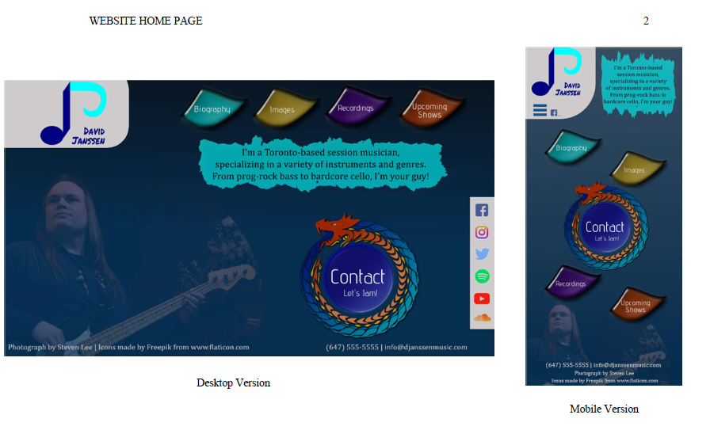
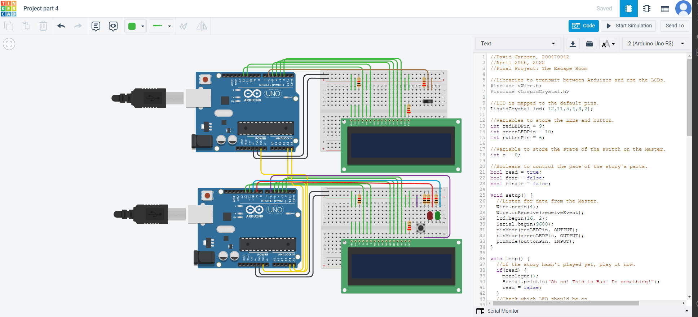

Personal Projects
Digital Design Mockup
This was a mockup for a personal website I designed using a combination of raster and vector graphics, while following industry-standard digital design principles.
Fire Site
This was one of my first real web projects, based around humanity's first real invention: FIRE! While the site's content was mainly a joke, I am still proud of its overall design and functionality.
Virtual Escape Room
My personal favourite project of all time, a virtual escape room I created using Arduinos. The room takes the user on a puzzle adventure across 4 different "story" sections. The user must solve every puzzle to "escape" successfully.